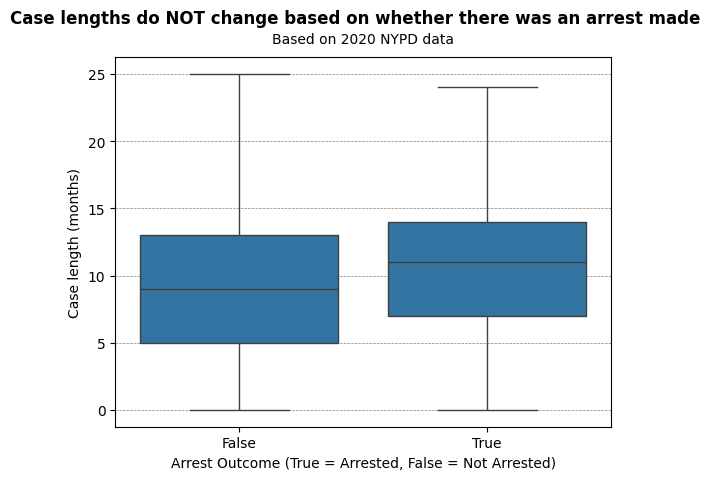
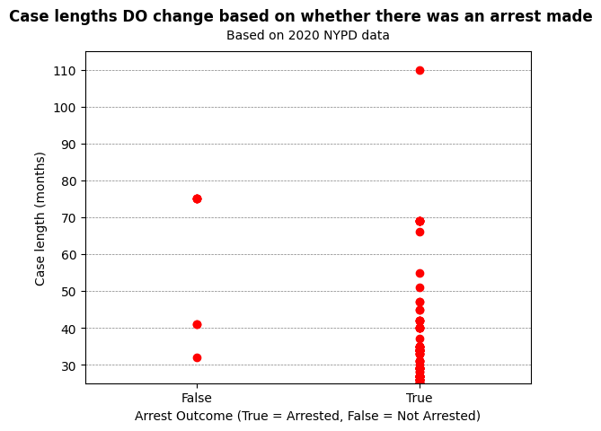

Proposition: Case Lengths do not change based on whether there was an arrest made.
FOR the Proposition

Design Decisions and Rationale:
- Hiding the statistical outliers: Box plots will show outliers by default. If the outliers were left in, category "True" on the x-axis would have significantly more points of case lengths greater than 25 than category "False". Setting argument `showfliers=False` removes the outliers, and limiting the y-axis to 25 months makes the hiding of the outlier values seem natural. This creates the illusion that both categories share a nearly identical, compact range.
- Choosing a box plot to emphasize measures of center: Because the medians (~9 months for False, ~11 months for True) and IQRs are relatively similar, the box plot naturally minimizes the visual difference between the two groups. This choice leans on legitimate statistical representations to downplay the disparity in case lengths that might be otherwise obvious in a visualization that plots every data point.
- No indication of sample size: Omitting sample size (n) creates a false equivalence that helps persuade the reader that they are equally representative. In reality, there are 18882 cases where arrest_outcome=True, and there are 14476 cases where arrest_outcome=False. Additionally, there are nearly 10x as many cases where the case length is greater than 25 when arrest_outcome=True compared to when arrest_outcome=False. However, this is conveniently not shown in the visualization because outliers were omitted.
AGAINST the Proposition

Design Decisions and Rationale:
- Truncating the Y-axis to exclude the majority of data: Choosing y-axis limits of 25 to 115 months seems reasonable at first since the proposition implies looking at whether case lengths are longer when an arrest is made. In actuality, beyond y=25 are all outlier values. Therefore, this visualization is a representation of only outlier cases, ignoring the majority of cases in the dataset. A reader seeing how significantly arrest_outcome=True outnumbers arrest_outcome=False might immediately be against the proposition, not realizing the data being shown is not a fair representation of the whole dataset.
- Using a categorical strip (scatter) plot:
Plotting every point directly on vertical lines emphasizes extreme values and raw counts rather than statistical averages.
Because there are more total cases in the "True" category in general, there are naturally going to be more data points for that category regardless.
As aforementioned, its number of outliers largely outnumbers that of arrest_outcome=False, so this only exacerbates the number difference.
Therefore, a strip plot makes the raw volume of long cases for arrest_outcome=True feel more visceral.
I tried using a box plot on these outlier data points, but it was not usable because there were not enough data points for arrest_outcome=False. - No indication of sample size: A reader might take the obvious difference in number of data points between the two categories at face value, not realizing it's not necessarily a fair representation considering there are 18882 cases where arrest_outcome=True compared to 14476 cases where arrest_outcome=False. Additionally, there are nearly 10x as many cases where the case length is greater than 25 when arrest_outcome=True compared to when arrest_outcome=False.
Final Reflection
The most straightforward part was identifying a proposition/narrative that would highlight the contrast between similar measures of center and highly skewed outliers. Additionally, I was surprised at how straightforward it is to 1. change the narrative of a "story" with a few tweaks in design choices; 2. produce the results you want through sheer will. The objective was no longer seeing what insights we can extract from the data, but rather how can I manipulate the data to show the results I want. One thing I found difficult was implementing design decisions that were discrete. My rationale for deciding which design choices were subtle enough to use was to make sure the visualizations looked as similar in layout as possible.
Finding the boundary between "acceptable" and "misleading" persuasive choices seems subjective. I personally feel like all of my design choices were misleading. The only one I would maybe consider acceptable is the omission of outliers from the box plot since outliers are often left out of visualizations, especially when the focus is measuring statistical averages. I would consider a persuasive choice eggregiously misleading if it relies on a reader being ignorant for it to be convincing or considered appropriate. My definition of “ethical analysis and visualization” would be when it is done without baking your biases into your investigation and asking yourself if there are ethical limitations to any design decisions.